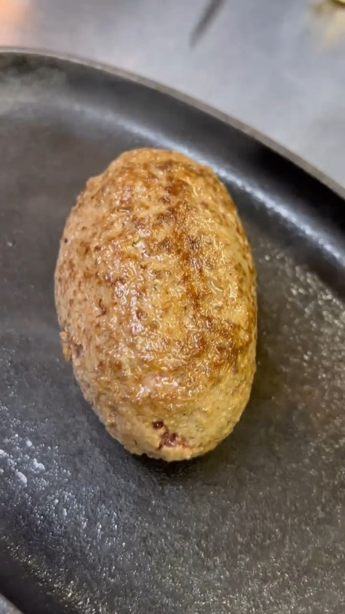
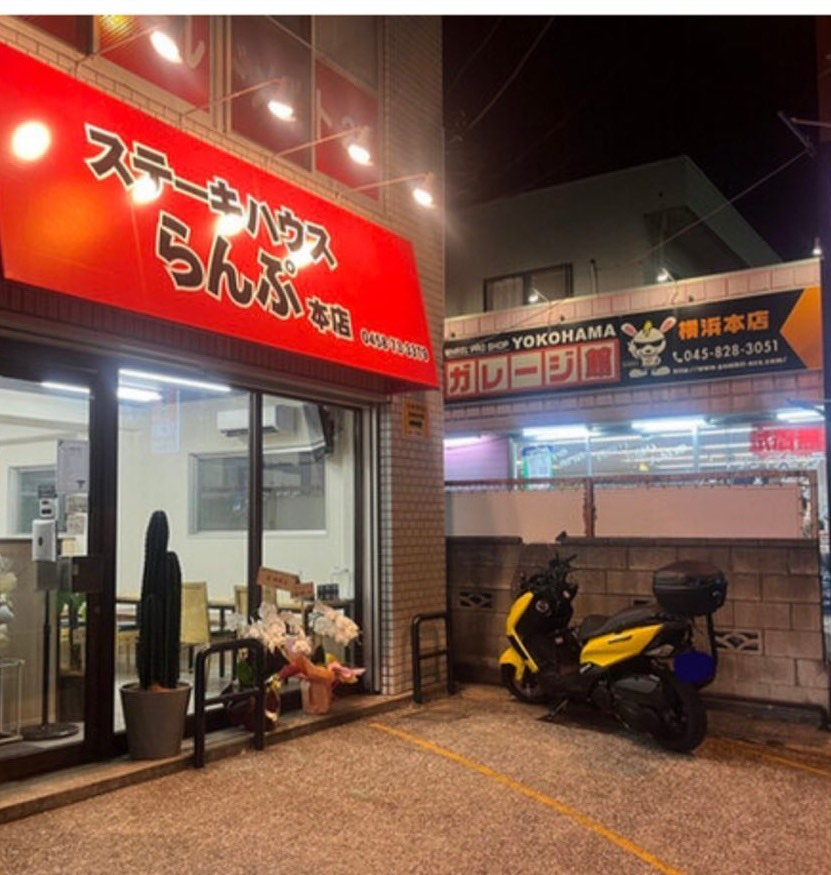

横浜・戸塚 国道1号沿い
ステーキハウス らんぷ 本店
焼き石で、自分の焼き加減にする店。
行く前に、これだけ
- 営業時間
- 平日は夜のみ 17:00〜22:00（ラストオーダー 21:30）
土・日・祝 11:30〜14:00（ラストオーダー 13:30）／ 17:00〜22:00（ラストオーダー 21:30） - 定休日
- 掲載媒体によって記載が違います
要確認: 定休日と平日昼の営業は、お店に確認中です。当日は Instagram をご覧ください - 駐車場
- 5台。店の前に2台、徒歩3分以内の契約駐車場に3台
- 行き方
- 国道1号沿い。神奈中バス「坂下口」バス停の前
東戸塚駅 東口から徒歩約20分 - 電話
- 045-873-3379
- 席
- 21席・全席禁煙・ベビーカーで入れます
食べ方
ハンバーグもステーキも、レアで届きます。焼き石が届いたら、ここから先はお客さまの手で。
-
焼き石が来る
ハンバーグもステーキも、レアの状態で届きます。皿と一緒に、熱した焼き石が付いてきます。
-
好みで焼く
一口ずつ、焼き石にのせて好みの焼き加減にします。最後まで熱いまま食べられます。
-
ソースを替える
手作りのソースが数種類、無料で付きます。同じ肉を、途中で違う味にできます。
要確認: ソースの種類と名前は、お店に確認してから載せます

アクセス
- 住所
- 〒244-0803 横浜市戸塚区平戸町491-4 第2笠原ビル 1F
- バス
- 神奈中バス 戸塚方面「坂下口」バス停の前
- 電車
- JR横須賀線 東戸塚駅 東口から徒歩約20分（約1.2km）
- 車
- 国道1号沿い。駐車場5台（店の前に2台、徒歩3分以内の契約駐車場に3台）
2022年2月に開店しました。
